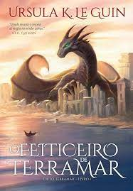

|  |
Em O feiticeiro de Terramar, primeiro volume da saga, acompanhamos Ged, um jovem feiticeiro que busca descobrir seu caminho em meio às incertezas e às imprudências da juventude. À medida que a magnitude de seu poder é revelada, a harmonia do mundo e as leis da magia são colocadas à prova: nenhum homem deve alterar o equilíbrio entre a vida e a morte.
Agora, o feiticeiro precisa iniciar a jornada que o apresentará às grandiosas palavras de poder, o fará encarar dragões ancestrais, navegar por mares desconhecidos e atravessar os portões da morte, para enfrentar a sombria criatura que ameaça não só Ged e Terramar, mas os tênues limites entre luz e escuridão. |